Este plantel mexicano se formó en el sector amateur en 1944 fundado en su mayoría por ingleses que se integran a la Liga Mexicana de Futbol.
El viejo Velódromo se convirtió en el Parque España con el que se arrancó la mejor etapa de desarrollo de futbol en Puebla, posteriormente convertido en el Parque El Mirador.
A principios de 1944, un grupo de empresarios lanzaron la propuesta de formar un equipo de futbol profesional e ingresarlo a la Primera División, acción que se logró el 7 de mayo de ese mismo año cuando el equipo Puebla F.C. debutó en Veracruz dentro del Torneo de Copa 43 – 44.
Dentro del Campeonato 44 – 45, el equipo Puebla F.C. jugó su primer partido de liga el 20 de agosto ante Atlas de Guadalajara en el campo “El Mirador” escenario inaugurado el 21 de mayo de 1944.
Entre 1944 y 1949, el equipo Puebla F.C. cumplió con destacadas actuaciones logrando un segundo lugar, un tercero y tres cuartos sitios, además de la primera Copa México en la temporada 44 – 45 para ingresar a la lista de equipos grandes del futbol mexicano. En la temporada 53-54 conquistó su segundo titulo de Copa México y logró el tercer lugar en la liga.
La empresa no fue fácil y en la temporada 55 - 56 inicio una etapa difícil; en la 56 – 57 el equipo Puebla F.C. solicitó permiso para retirarse de la Liga y retornar hasta ocho años más tarde.
El año de 1964 se enmarcó como el regreso del futbol profesional a Puebla a través de la Segunda División, seis años más tarde, en noviembre de 1970 consiguió ganar una liguilla de promoción para ascender al máximo circuito profesional.
INICIO
Puebla FC

un balon azul con una franja a su costado izquierdo, rodeado de 5 estrellas que representan sus cinco titulos ganados, encabezan el escudo que actualmente podemos ver para Puebla, ademas del mote Puebla F.C. encima de una franja que va de derecha a izquierda y al costado izquierdo dos estrellas, que representan los maximos logros en la historia del club, dos titulos de liga y con tono de azul y blanco, siendo un escudo que el solo verlo se recuerdan los maximos triunfos de la franja.
INICIO
Puebla FC
 Estadio Cuauhtémoc
Estadio Cuauhtémoc
El diseño original del Estadio Cuauhtémoc es del arquitecto Pedro Ramírez Vázquez, quien creó además el Estadio Azteca, la Basílica de Guadalupe y otras grandes obras.
Fue inaugurado el 6 de octubre de 1968, con un par de encuentros, Puebla ante América y como estelar un partido donde la Selección de México empató a un tanto contra la Selección Olímpica de Checoslovaquia.
El Estadio sufrió una ampliación en 1986, con lo que el aforo actual es de 42,648 personas, cómodamente sentadas, con 20 accesos generales, un acceso especial para discapacitados; 330 palcos y 36 sanitarios generales; tres módulos de taquillas cada uno con 9 ventanillas; cuatro vestidores; 2 gimnasios, sala de prensa, consultorio médico, 3 palcos para estaciones radiofónicas y 2 cabinas para Televisión; 18 mil 800 metros cuadrados de áreas verdes, estacionamiento compartido para más de 3,600 automóviles; alumbrado de luz blanca de aditivo metálico con cuatro subestaciones eléctricas.
El gran escenario sirvió durante los Juegos Olímpicos de 1968 y más tarde albergó dos Copas del Mundo (1970 y 1986), contando con grandes figuras del balompié mundial como el gran jugador Diego Armando Maradona quien jugó con su selección en este estadio.
El estadio Cuauhtémoc ha sido la casa del fútbol poblano durante más de cuatro décadas y escenario de grandes batallas de perfil nacional e internacional.
Dirección: Calzada Ignacio Zaragosa 666, Unidad Deportiva, Maravillas
CP 72220 Heroica Puebla de Zaragoza, Puebla, México
INICIO
Puebla FC

 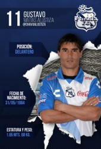
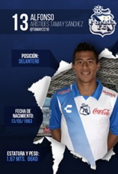
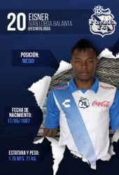
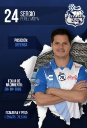
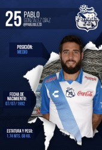
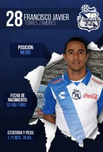
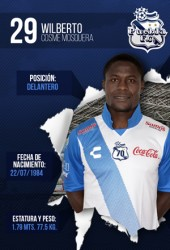
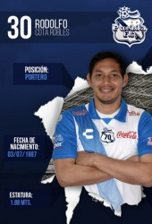
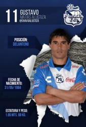
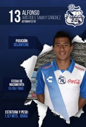
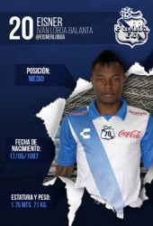
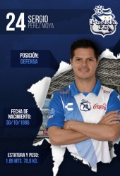
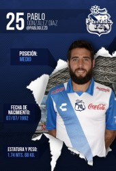
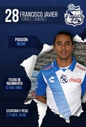
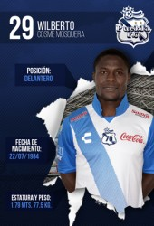
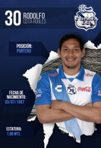